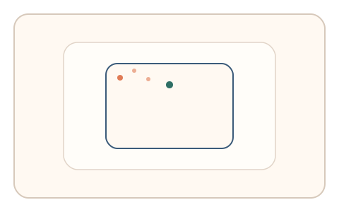
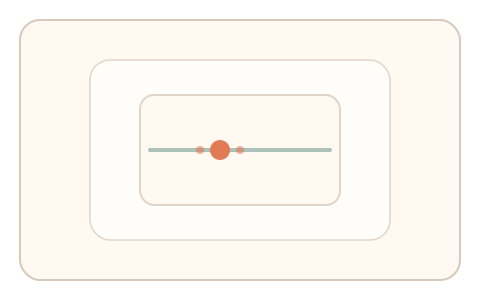

#113
Morphological Analysis - Combination Batches
已扩展
姿态微漂移校核
记录设备姿态微漂移作为背景，随机插入小任务要求保持一致操控力度，以异常检测验证真实性。
概念原文
在 App 中记录设备姿态的微漂移作为交互背景，随机插入小任务要求保持一致的操控力度，系统以异常检测判定。任务结构为随机插入，信号形态为轨迹动力学与设备基线。
利用现实姿态微漂移强化“在场性”。
研究背景
移动设备在真实持握下会产生细微姿态漂移，这些漂移与操控力度存在稳定关系。随机插入任务可检验在场性与一致性，脚本难以复刻真实姿态基线。
核心机制
- 持续记录设备姿态与微漂移。
- 随机插入短任务要求保持一致操控力度。
- 记录轨迹动力学与姿态基线。
- 对异常偏离进行检测与判定。
用户流程
- 步骤 1：用户正常操作，系统记录姿态微漂移。
- 步骤 2：随机出现短任务保持一致力度。
- 步骤 3：系统分析一致性并判定。
判定信号
姿态微漂移谱
真实持握具有稳定的微漂移结构。
操控力度与轨迹一致性
真实用户操控力度与姿态漂移存在关联。
判定逻辑
漂移谱与操控一致性需落在人类分布区间；过度稳定或突变判异常。
对抗面
- 脚本伪造固定姿态曲线
- 重放真实用户的姿态序列
防御与缓解
- 随机化任务时机与力度要求
- 结合多传感器信号交叉验证
- 叠加反应时与停顿信号
可达性与风险
提供无需姿态传感器的替代任务，避免对特殊设备或用户造成障碍。
- 传感器噪声可能引入误判
- 设备型号差异影响基线
可视化状态

状态 1：姿态记录
后台记录姿态微漂移。

状态 2：随机任务
随机插入保持力度的小任务。

状态 3：一致判定
比较姿态漂移与操控一致性。
参考资料
Inertial measurement unit
说明姿态传感器与微漂移数据来源。
Motor control
说明操控力度与微动作稳定性。